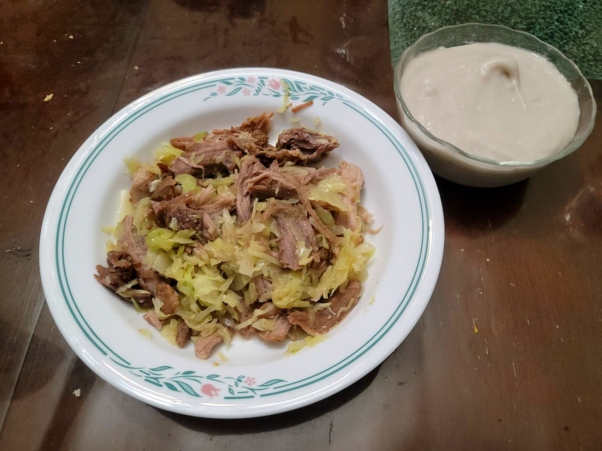

Kalua Pig

Ingredients:
- 3 lb Pork shoulder/butt, cut into 3 pieces
- 1 tbsp (25 g) Hawaiian salt
- 1 tbsp Liquid smoke, Mesquite or Hickory
- 1-2 large Banana leaf
- Optional: 8-10 cloves Garlic, halved
- Optional: 1 Cabbage, sliced
Instructions:
- Pierce the pork all over with a fork. Then rub all over with the liquid smoke and then with the salt. Less traditionally, you can add garlic by sticking them into holes around the pork.
- Wrap the pork with the banana leaf and place into the slow cooker seam-side down. Let cook on low for 8-12 hours, checking every hour after the 8 hour mark.
- Remove from the slow cooker and from the banana leaf. Shred the pork and reserve 1 cup of the liquid.
- For kalua pig and cabbage, add the cabbage to a large pan with the pork and 1 cup of the liquid. Cover and bring to a boil. Then remove the cover and cook on medium for about 5 minutes or until the cabbage is cooked to preference.
- Serve hot. Optionally with poi.